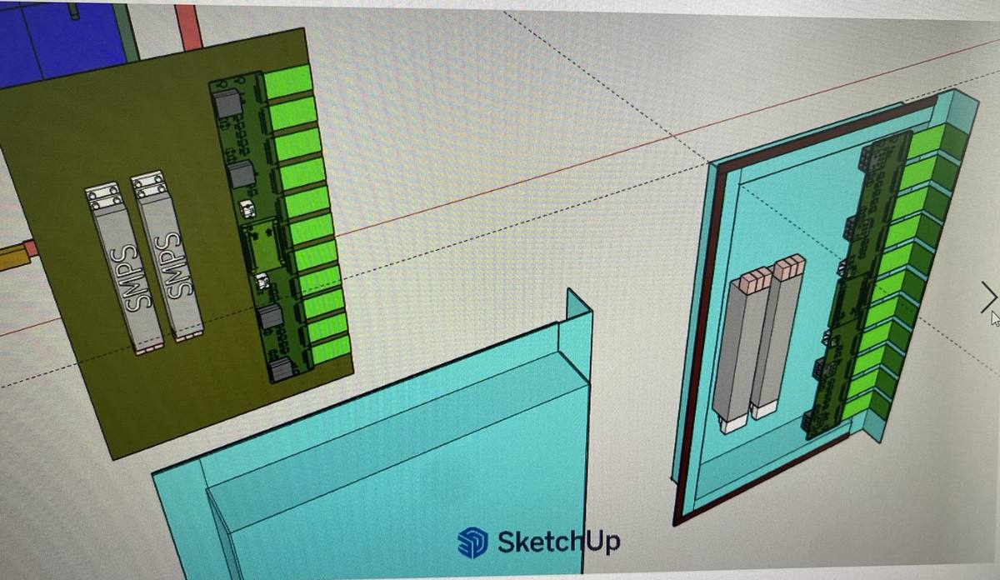
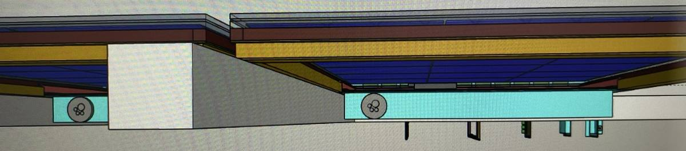
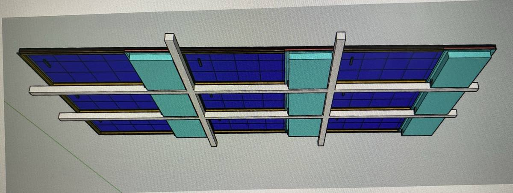

보내주신 기구 설계(유리 LED + PV 합지 패널, 고정 프레임, SMPS·Hub board 고정판, 알루미늄 커버)를 검토한 결과입니다. 전체 배치는 그대로 유지하고, 구동부(SMPS)의 방열이 왜 필요한지, 현재 설계에서 어디가 취약한지, 그리고 SMPS 2면 써멀패드 접촉 + 커버 핀으로 개선하는 방법을 정리했습니다. 온도는 서울 기후와 운전 조건으로 계산한 추정값입니다.
| SMPS 케이스 온도 | 콘덴서 수명 (105°C·2,000h급) | 콘덴서 수명 (105°C·5,000h급) |
|---|---|---|
| 현재 구조 (연중 평균 조건) | 약 1.1년 | 약 2.6년 |
| 2면 패드, 핀 없음 | 약 5.5년 | 약 14년 |
| 개선안 (2면 패드 + 커버 핀) | 약 16.5년 | 계산상 40년 (다른 부품이 먼저 결정) |
하루 18시간 운전, 서울 월별 평년 기온, 콘덴서 온도 = 케이스 + 10K, 10°C마다 2배 규칙으로 계산한 추정값입니다.
보내주신 도면에 취약 위치를 번호로 표시하였으며, 각 번호의 상세 내용은 아래 표와 같습니다.

1234
15
789| # | 위치 | 문제점 | 예상 현상 | 개선 |
|---|---|---|---|---|
| 1 | SMPS·고정판 (그림 1·2) | SMPS가 판에만 볼트로 고정되어 있고, 이 판은 PV 뒤의 막힌 공기층(위쪽은 FPCB로 막히고 아래만 열림)을 마주봄 | 판이 약 89°C까지 데워지고 SMPS 열(약 50W)도 이 판으로만 나감 → SMPS 케이스 약 99°C | SMPS 위쪽 면을 커버로 연결하는 열 경로(Al 보스 + 써멀패드), 판 공기층 면에 저방사 호일(04장) |
| 2 | SMPS와 커버 사이 (그림 1) | 상대적으로 차가운 커버(약 68°C)와 SMPS 사이가 13mm 공기로 끊김. 함체 밀폐, 커버에 핀 없음 | 커버로 나가는 열이 약 4W뿐, 함체 내부 공기 약 79°C. Hub board도 같은 공간에서 고온 | 커버 쪽 접촉 + 커버 바깥 세로 핀, 흑색 아노다이징 |
| 3 | FPCB가 꺾이는 립 (그림 1) | FPCB 11개가 판금 립의 절단 모서리 위에서 90° 꺾임 | 피복이 닳아 단락·단선, 바람 진동으로 마모 | 립 끝을 R0.5 이상 말아 접기(헤밍), EPDM 엣지 트림, 굴곡 R은 FPCB 두께의 10배 이상 |
| 4 | 실링 플랜지 (그림 1) | FPCB가 개스킷 라인을 가로질러 지나감 | FPCB 두께만큼 틈이 생겨 방수(IP65)가 안 되고, 개스킷이 FPCB를 계속 누름 | FPCB 전용 관통부(슬롯 + 압착 그로밋 또는 포팅)를 개스킷 라인과 분리, 개스킷은 끊김 없는 링 |
| 5 | 측면 글랜드 (그림 2) | 케이블이 옆에서 수평으로 들어감 | 케이블을 타고 물이 들어감 | 글랜드를 아래쪽으로 옮기거나 아래로 처진 루프, 안 쓰는 구멍은 마개 |
| 6 | 함체 전체 | 압력평형 벤트가 없음 | 주야간 온도차에 따른 호흡 현상으로 습기가 유입되어 결로 발생 | 아래쪽에 방수 통기 벤트(ePTFE, IP67급) |
| 7 | 세로로 쌓이는 함체 (그림 3) | 패널마다 함체가 같은 줄로 정렬됨 | 아래 패널의 더운 공기가 위 패널로 올라가 위층일수록 온도가 쌓임. 벽 쪽이 막혀 있으면 최상단 SMPS가 개선안 기준으로도 82~93°C(벽 간격 150~200mm) | 벽과 패널 사이 간격과 측면이 열려 있는지 확인이 필요합니다. 확인 결과에 따라 적층 대책은 별도로 협의드리겠습니다 |
| 8 | 멀리언·레일 (그림 3) | 세로 멀리언과 가로 레일이 함체 뒤를 가로지름 | 커버를 뒤에서 열 수 없고, 핀 사이 공기 흐름이 막힘 | 멀리언·레일을 함체와 겹치지 않게 배치, 핀 끝과 15~20mm 이상 띄움 |
| 9 | 교체 접근 (그림 3) | 함체가 패널 뒷면에 붙어 있고 하지에 가려짐 | SMPS 교체 때 패널을 떼어내야 함(03장) | 교체 순서와 접근 경로 확인, 캡티브 스크류와 낙하 방지 줄 |
| 10 | 체결부 | 알루미늄 판·커버와 스테인리스 체결 | 이종금속 부식 | 절연 와셔, 아노다이징, 접지점은 피막 제거 + 톱니 와셔 |
패널과 함체를 개별 교체하는 방식으로 계획하신 것으로 알고 있습니다. 그런데 SMPS는 PV와 달리 수명이 정해진 소모품이라서, 지금 온도에서는 교체가 자주 반복될 수 있습니다.
함체 배치는 그대로 두고, SMPS 열이 커버를 거쳐 바깥 공기로 나가는 길을 만듭니다. 판과 커버는 알루미늄을 그대로 씁니다.
| 부위 | 개선 내용 | 이유 |
|---|---|---|
| 커버 쪽 접촉 (주 방열 경로) | 커버 안쪽에 Al 보스(또는 스페이서)를 두어 SMPS 위면과의 약 13mm 간격을 메우고, 그 사이에 써멀패드 | 패드 1~2mm만으로는 13mm 간격을 메울 수 없음. 열 대부분(약 70W)이 이 경로로 나감 |
| 판 쪽 접촉 | SMPS 아래면과 판 사이에 얇은 써멀패드(0.5~1mm) | 밤과 흐린 날 보조 방열, SMPS 고정·진동 억제 |
| 판 공기층 면 | 저방사 Al 호일(또는 3~5mm 단열재)을 붙임 | 낮에는 판이 SMPS보다 뜨거워서, 호일 없이 판 쪽 패드만 있으면 공기층 열이 SMPS로 10~20W 들어옴. 호일로 절반 이하로 줄어듦 |
| 써멀패드 | 실리콘 갭패드, 열전도 4W/mK 이상, 두께 1~1.5mm(판 쪽 0.5~1mm), 압축 20~40%, 경도 Shore 00 30~50, 저분자 실록산 저감품, 유리섬유 보강형 | 연질이어야 커버 변형이 적고, 보강형이 현장 교체 시 손상이 적음 |
| 커버 핀 | 커버 바깥면에 세로 핀, 높이 30mm, 두께 2mm, 간격 12mm(약 35개). 6063 압출 또는 다이캐스트 일체형, 흑색 아노다이징 | 설치 상태에서 핀이 세로 방향이어야 자연대류가 원활함. 흑색 아노다이징은 복사 방열을 크게 높임(벽 쪽 그늘이라 햇빛 흡수 영향은 작음) |
| 간격 관리 | 커버 보스와 판 스탠드오프가 금속끼리 맞닿는 하드스톱으로 패드 압축량을 고정. 체결 간격 100mm 이하, SMPS 바로 옆에 체결 보스 | 패드 반발력(약 0.8~2.6kN)으로 얇은 커버가 휘면 개스킷이 들뜸 |
| 방수 | 개스킷은 홈에 넣고 압축 25~35%, FPCB·글랜드 관통부는 개스킷 라인 밖에서 따로 실링, IP65 시험은 패드를 넣은 상태로 | 패드 반발력과 방수를 함께 확보 |
| SMPS 확인 | HWA805V0J-SS 케이스의 통풍 구멍 위치와, 내부 발열 부품이 어느 면에 붙어 있는지 확인. 패드는 구멍 없는 방열면에 | 통풍 구멍을 패드로 막으면 오히려 온도가 오를 수 있음 |
| 설치 간격 | 핀 끝과 벽·레일 사이 15~20mm 이상 | 핀 사이로 공기가 흘러야 방열 효과가 있음 |
| 커버 핀 높이 | 함체+핀 두께 | 7월 설계 / 8월 평균일 |
|---|---|---|
| 15 mm | 60 mm | 약 62 / 59°C |
| 20 mm | 65 mm | 60.2 / 56.8°C |
| 30 mm (권장) | 75 mm | 57.8 / 54.3°C |
| 40 mm | 85 mm | 56.0 / 52.5°C |
| 판 쪽 열 흐름 (7월 낮) | SMPS 케이스 |
|---|---|
| 2면 패드 + 핀 H30 | 57.8°C (판에서 18W 유입) |
| + 판 공기층 면 호일 | 55.8°C (유입 11W) |
| + 호일 + 단열 5mm | 54.7°C (유입 7W) |
벽 쪽 공간이 좁아 핀을 20mm로 낮춰야 한다면 판 호일을 반드시 함께 적용해 주시기 바랍니다. 함체 크기는 현재 도면을 기준으로 480×290×45mm로 추정했습니다.
함체는 작을수록 좋지만, 작아지면 방열 면적이 줄어 핀을 높여야 합니다. 개선안(2면 패드 + 핀 + 판 호일) 기준으로 계산했습니다.
| 외형 (가로×세로×깊이) | 핀 높이 | 7월 설계 / 8월 평균일 | 함체+핀 두께 | 판정 |
|---|---|---|---|---|
| 480×290×45 (현재 추정) | 30 mm | 55.8 / 52.1°C | 75 mm | 충족 |
| 420×260×40 | 30 mm | 57.5 / 53.8°C | 70 mm | 권장 최소 |
| 380×230×35 | 40 mm | 57.1 / 53.5°C | 75 mm | 충족 (핀 높아짐) |
| 340×200×35 | 40 mm | 약 59 / 55°C | 75 mm | 경계, 부품 배치 빠듯 |
함체를 줄여도 핀을 높여야 해서 벽 쪽 두께(70~75mm)는 거의 그대로이고, 면적과 무게가 줄어듭니다. 크기를 정하는 것은 FPCB 커넥터 11개가 늘어선 길이(약 390~440mm)와 SMPS 2대(250×53×26mm), Hub board, 글랜드입니다. 부품 배치상 현실적인 최소 내부 치수는 약 440×240×38mm입니다.
서울 월별 평년 기온으로 낮(평균 최고기온, 맑은 날 정오, LED 400W)과 밤(평균 최저기온, LED 200W)을 계산했습니다.
| 월 | 현재 낮 (맑음 / 평균) | 현재 밤 | 2면 패드, 핀 없음 낮 | 개선안 낮 (맑음 / 평균) | 개선안 밤 | 소형 420×260 낮 |
|---|---|---|---|---|---|---|
| 1월 | 78 / 73 | 34 | 49 | 29 / 27 | 6 | 28 |
| 3월 | 82 / 79 | 41 | 55 | 36 / 35 | 13 | 36 |
| 4월 | 86 / 84 | 46 | 60 | 42 / 41 | 19 | 42 |
| 5월 | 89 / 87 | 51 | 64 | 47 / 46 | 25 | 47 |
| 6월 | 92 / 90 | 56 | 67 | 50 / 50 | 30 | 50 |
| 7월 | 94 / 91 | 60 | 69 | 52 / 51 | 34 | 52 |
| 8월 | 97 / 94 | 60 | 71 | 54 / 53 | 34 | 54 |
| 9월 | 96 / 92 | 55 | 69 | 51 / 50 | 29 | 51 |
| 10월 | 92 / 89 | 49 | 65 | 46 / 45 | 22 | 45 |
| 11월 | 86 / 82 | 42 | 58 | 39 / 37 | 15 | 38 |
| 12월 | 79 / 75 | 36 | 51 | 31 / 29 | 8 | 30 |
| 7월 최악 (외기 35°C) | 98.7 | – | 73.7 | 57.8 | – | 57.5 |
| 1년 동안 (추정) | 60°C 초과 | 70°C 초과 |
|---|---|---|
| 현재 구조 | 약 4,800 시간 | 약 3,800 시간 |
| 2면 패드, 핀 없음 | 약 1,600 시간 | 0 |
| 개선안 (2면 패드 + 커버 핀) | 0 | 0 |
단위 °C. 개선안은 2면 패드 + 커버 핀 30mm(480×290×45 기준), 소형은 420×260×40 + 핀 30mm + 판 호일입니다. 평년 조건에서는 개선안이 60°C를 넘지 않고, 외기 35°C 이상인 극한일에만 넘습니다. 위 값은 맨 아래 패널(단독) 기준이며, 세로로 쌓인 위층은 벽 쪽 조건에 따라 더 높아집니다(02장 7번).
| 순위 | 항목 | 내용 |
|---|---|---|
| P1 | 개선안 반영 | SMPS 2면 써멀패드 접촉(커버 쪽 Al 보스 포함), 커버 바깥 세로 핀(H30·t2·p12), 판 공기층 면 저방사 호일을 반영한 도면 |
| P1 | 함체 크기 | 현재 함체 실제 치수와, 420×260×40mm 수준으로 줄일 수 있는지 |
| P1 | SMPS 교체 | 교체 순서와 접근 경로(곤돌라·실내·캣워크), 1건당 소요 시간, 캡티브 스크류·낙하 방지 줄, 패드 교체 키트 |
| P1 | 벽 쪽 공간 | 패널과 벽 사이 간격, 측면이 열려 있는지, 멀리언·레일 위치(핀 끝과 15~20mm 이상) |
| P2 | SMPS 데이터 | HWA805V0J-SS 데이터시트: 외형 치수, 효율, 동작온도, 디레이팅 곡선, 케이스 통풍 구멍과 방열면 |
| P2 | FPCB·실링 | 립 끝 헤밍과 엣지 트림, FPCB 전용 관통부, 개스킷 홈, 글랜드 위치, 벤트 |
| P2 | 검증 | 개선 시제품으로 온도 시험(외기 35~40°C 또는 여름 실증, LED 최대 휘도 2시간 이상, SMPS 케이스·커버·판·공기층 측정) |